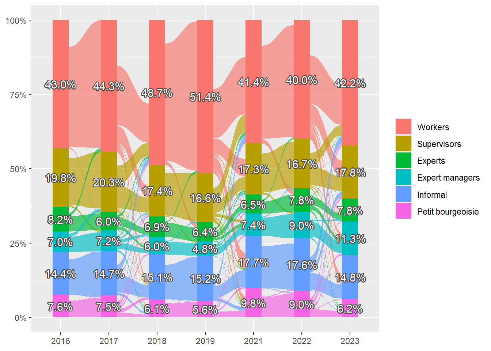

| Actividad | Ola | Total | ||||||
| 1 | 2 | 3 | 4 | 5 | 6 | 7 | ||
| Trabaja de manera remunerada con jornada completa |
1391 47.6 % |
1116 45.2 % |
1688 45.2 % |
1501 44.1 % |
1095 40 % |
1137 41.8 % |
1166 42.8 % |
9094 43.9 % |
| Trabaja de manera remunerada a tiempo parcial |
351 12 % |
362 14.7 % |
537 14.4 % |
560 16.4 % |
484 17.7 % |
456 16.7 % |
375 13.8 % |
3125 15.1 % |
| Estudia y trabaja | 60 2.1 % |
71 2.9 % |
90 2.4 % |
68 2 % |
62 2.3 % |
49 1.8 % |
34 1.2 % |
434 2.1 % |
| Solo estudia | 101 3.5 % |
75 3 % |
116 3.1 % |
77 2.3 % |
51 1.9 % |
36 1.3 % |
19 0.7 % |
475 2.3 % |
| Jubilado o pensionado |
371 12.7 % |
345 14 % |
479 12.8 % |
499 14.6 % |
433 15.8 % |
545 20 % |
631 23.2 % |
3303 15.9 % |
| Desempleado, buscando trabajo |
166 5.7 % |
73 3 % |
198 5.3 % |
154 4.5 % |
172 6.3 % |
119 4.4 % |
156 5.7 % |
1038 5 % |
| Realiza tareas no remuneradas |
367 12.6 % |
332 13.5 % |
443 11.9 % |
449 13.2 % |
366 13.4 % |
294 10.8 % |
235 8.6 % |
2486 12 % |
| Esta enfermo o tiene una discapacidad |
24 0.8 % |
17 0.7 % |
29 0.8 % |
32 0.9 % |
44 1.6 % |
28 1 % |
24 0.9 % |
198 1 % |
| No estudia, no trabaja y no busca trabajo |
90 3.1 % |
77 3.1 % |
152 4.1 % |
67 2 % |
33 1.2 % |
59 2.2 % |
82 3 % |
560 2.7 % |
| Total | 2921 100 % |
2468 100 % |
3732 100 % |
3407 100 % |
2740 100 % |
2723 100 % |
2722 100 % |
20713 100 % |
1 Exploración y Preparación de datos
1.1 Variables
Cargamos la base de datos ELSOC 2016-2023 en formato long.
Seleccionamos las variables de interés.
Primero, se realiza una revisión exploratoria de las variables de interés, considerando todas las olas de la base de datos, tanto para la muestra original como la de refresco.
Se comienza con 20761 observaciones.
1.2 Caracterización empleo
1.2.1 actividad
Con la variable numérica ELSOC:
m02. ¿Cuál de estas situaciones describe mejor su actividad principal durante el último mes?
Creamos la variable tipo factor actividad (la variable m02 sigue siendo numérica).
Al remover los NA’s se queda con 20713 observaciones.
1.2.2 rel_empleo
Con la variable numérica ELSOC:
m07. En su actual ocupación usted trabaja como:
Creamos la variable factor rel_empleo, (la variable m07 sigue siendo numérica).
La variable de Relación de Empleo, llamada rel_empleo, solamente está presente en las olas 2016, 2018 y 2021. Por lo tanto, se duplican los datos de relación de empleo para los años siguientes, es decir, en 2017 se pondrán los valores de 2016, y así sucesivamente.
| Relación de empleo | Ola | Total | ||||||
| 1 | 2 | 3 | 4 | 5 | 6 | 7 | ||
| Empleado u obrero en empresa privada |
1091 61.1 % |
897 60.4 % |
1349 58.3 % |
1143 57.8 % |
898 54.1 % |
731 52.9 % |
866 54 % |
6975 57.1 % |
| Empleado u obrero del sector público |
186 10.4 % |
155 10.4 % |
291 12.6 % |
261 13.2 % |
229 13.8 % |
195 14.1 % |
264 16.4 % |
1581 13 % |
| Miembro de las Fuerzas Armadas y de Orden |
25 1.4 % |
17 1.1 % |
25 1.1 % |
21 1.1 % |
19 1.1 % |
11 0.8 % |
12 0.7 % |
130 1.1 % |
| Patrón/a o empleador/a |
85 4.8 % |
72 4.9 % |
107 4.6 % |
91 4.6 % |
86 5.2 % |
66 4.8 % |
55 3.4 % |
562 4.6 % |
| Trabaja solo, no tiene empleados |
321 18 % |
274 18.5 % |
417 18 % |
353 17.8 % |
347 20.9 % |
305 22.1 % |
310 19.3 % |
2327 19.1 % |
| Familiar no remunerado |
4 0.2 % |
2 0.1 % |
7 0.3 % |
4 0.2 % |
1 0.1 % |
2 0.1 % |
4 0.2 % |
24 0.2 % |
| Servicio doméstico | 75 4.2 % |
67 4.5 % |
118 5.1 % |
105 5.3 % |
79 4.8 % |
71 5.1 % |
94 5.9 % |
609 5 % |
| Total | 1787 100 % |
1484 100 % |
2314 100 % |
1978 100 % |
1659 100 % |
1381 100 % |
1605 100 % |
12208 100 % |
1.2.3 sector
Se crea en una nueva variable dicotómica, sector, donde:
sector==0: Sector público más fuerzas armadas (m07==2,m07==3)sector==1: Sector privado (m07==1,m07==4,m07==5,m07==6,m07==7)
| Sector | Ola | Total | ||||||
| 1 | 2 | 3 | 4 | 5 | 6 | 7 | ||
| 0 | 211 11.8 % |
172 11.6 % |
316 13.7 % |
282 14.3 % |
248 14.9 % |
206 14.9 % |
276 17.2 % |
1711 14 % |
| 1 | 1576 88.2 % |
1312 88.4 % |
1998 86.3 % |
1696 85.7 % |
1411 85.1 % |
1175 85.1 % |
1329 82.8 % |
10497 86 % |
| Total | 1787 100 % |
1484 100 % |
2314 100 % |
1978 100 % |
1659 100 % |
1381 100 % |
1605 100 % |
12208 100 % |
1.2.4 Ocupación
La variable tipo character ELSOC:
m03. ¿Cuál es su ocupación u oficio actual? Describa sus principales tareas y funciones en el puesto de trabajo actual
Se encuentra codificada de acuerdo con la CIUO88 para el año 2016 en la variable numérica ciuo88_m03, y CIUO08 para los años 2018 y 2021, en la variable numérica ciuo08_m03.
ciuo88_m03: CIUO (1988) del entrevistado, para año 2016ciuo08_m03: CIUO (2008) del entrevistado, para año 2018 y 2021
Por lo tanto, se realiza una recodificación creando una nueva variable numérica donde están todas las olas homolagadas a la CIUO08, llamada isco08.
Además, esta variable también se presenta solamente en las olas 2016, 2018 y 2021. Por lo que, se duplican los datos de ocupación para los años siguientes, es decir, en 2017 se pondrán los valores de 2016, y así sucesivamente.
Se crean dos nuevas variables isco08_1d y isco08_2d, de la ISCO08 con 1 y 2 dígitos respectivamente.
| CIUO08 | Ola | Total | ||||||
| 1 | 2 | 3 | 4 | 5 | 6 | 7 | ||
| 1 | 89 5 % |
75 5.1 % |
58 2.5 % |
45 2.3 % |
42 2.5 % |
32 2.3 % |
48 3 % |
389 3.2 % |
| 2 | 257 14.4 % |
198 13.4 % |
311 13.3 % |
263 13.2 % |
250 15 % |
206 14.9 % |
238 14.8 % |
1723 14.1 % |
| 3 | 362 20.3 % |
302 20.4 % |
181 7.7 % |
150 7.5 % |
148 8.9 % |
116 8.4 % |
202 12.6 % |
1461 11.9 % |
| 4 | 26 1.5 % |
18 1.2 % |
187 8 % |
163 8.2 % |
129 7.8 % |
107 7.7 % |
92 5.7 % |
722 5.9 % |
| 5 | 348 19.5 % |
277 18.7 % |
581 24.8 % |
500 25 % |
383 23 % |
322 23.3 % |
362 22.5 % |
2773 22.6 % |
| 6 | 41 2.3 % |
37 2.5 % |
27 1.2 % |
22 1.1 % |
30 1.8 % |
26 1.9 % |
23 1.4 % |
206 1.7 % |
| 7 | 319 17.9 % |
279 18.8 % |
346 14.8 % |
300 15 % |
297 17.9 % |
259 18.7 % |
243 15.1 % |
2043 16.7 % |
| 8 | 120 6.7 % |
96 6.5 % |
202 8.6 % |
166 8.3 % |
127 7.6 % |
103 7.4 % |
127 7.9 % |
941 7.7 % |
| 9 | 220 12.3 % |
200 13.5 % |
446 19.1 % |
390 19.5 % |
257 15.5 % |
213 15.4 % |
272 16.9 % |
1998 16.3 % |
| Total | 1782 100 % |
1482 100 % |
2339 100 % |
1999 100 % |
1663 100 % |
1384 100 % |
1607 100 % |
12256 100 % |
| CIUO08 | Ola | Total | ||||||
| 1 | 2 | 3 | 4 | 5 | 6 | 7 | ||
| 11 | 0 0 % |
0 0 % |
6 0.3 % |
5 0.3 % |
8 0.5 % |
7 0.5 % |
12 0.7 % |
38 0.3 % |
| 12 | 14 0.8 % |
11 0.7 % |
8 0.3 % |
5 0.3 % |
3 0.2 % |
2 0.1 % |
10 0.6 % |
53 0.4 % |
| 13 | 15 0.8 % |
12 0.8 % |
22 0.9 % |
18 0.9 % |
3 0.2 % |
4 0.3 % |
12 0.7 % |
86 0.7 % |
| 14 | 60 3.4 % |
52 3.5 % |
22 0.9 % |
17 0.9 % |
28 1.7 % |
19 1.4 % |
14 0.9 % |
212 1.7 % |
| 21 | 47 2.6 % |
41 2.8 % |
53 2.3 % |
40 2 % |
51 3.1 % |
41 3 % |
40 2.5 % |
313 2.6 % |
| 22 | 34 1.9 % |
25 1.7 % |
38 1.6 % |
31 1.6 % |
26 1.6 % |
22 1.6 % |
39 2.4 % |
215 1.8 % |
| 23 | 82 4.6 % |
65 4.4 % |
125 5.3 % |
113 5.7 % |
87 5.2 % |
67 4.8 % |
66 4.1 % |
605 4.9 % |
| 24 | 45 2.5 % |
33 2.2 % |
42 1.8 % |
34 1.7 % |
35 2.1 % |
30 2.2 % |
30 1.9 % |
249 2 % |
| 25 | 6 0.3 % |
3 0.2 % |
7 0.3 % |
7 0.4 % |
15 0.9 % |
12 0.9 % |
17 1.1 % |
67 0.5 % |
| 26 | 43 2.4 % |
31 2.1 % |
46 2 % |
38 1.9 % |
36 2.2 % |
34 2.5 % |
46 2.9 % |
274 2.2 % |
| 31 | 54 3 % |
51 3.4 % |
32 1.4 % |
27 1.4 % |
37 2.2 % |
24 1.7 % |
47 2.9 % |
272 2.2 % |
| 32 | 29 1.6 % |
24 1.6 % |
42 1.8 % |
34 1.7 % |
42 2.5 % |
34 2.5 % |
49 3 % |
254 2.1 % |
| 33 | 209 11.7 % |
171 11.5 % |
71 3 % |
60 3 % |
55 3.3 % |
45 3.3 % |
65 4 % |
676 5.5 % |
| 34 | 63 3.5 % |
51 3.4 % |
27 1.2 % |
20 1 % |
9 0.5 % |
9 0.7 % |
13 0.8 % |
192 1.6 % |
| 35 | 7 0.4 % |
5 0.3 % |
8 0.3 % |
8 0.4 % |
5 0.3 % |
4 0.3 % |
6 0.4 % |
43 0.4 % |
| 36 | 0 0 % |
0 0 % |
1 0 % |
1 0.1 % |
0 0 % |
0 0 % |
22 1.4 % |
24 0.2 % |
| 41 | 2 0.1 % |
2 0.1 % |
74 3.2 % |
64 3.2 % |
12 0.7 % |
11 0.8 % |
27 1.7 % |
192 1.6 % |
| 42 | 24 1.3 % |
16 1.1 % |
43 1.8 % |
36 1.8 % |
25 1.5 % |
20 1.4 % |
14 0.9 % |
178 1.5 % |
| 43 | 0 0 % |
0 0 % |
57 2.4 % |
50 2.5 % |
55 3.3 % |
47 3.4 % |
39 2.4 % |
248 2 % |
| 44 | 0 0 % |
0 0 % |
13 0.6 % |
13 0.7 % |
36 2.2 % |
28 2 % |
12 0.7 % |
102 0.8 % |
| 47 | 0 0 % |
0 0 % |
0 0 % |
0 0 % |
1 0.1 % |
1 0.1 % |
0 0 % |
2 0 % |
| 51 | 54 3 % |
46 3.1 % |
135 5.8 % |
118 5.9 % |
85 5.1 % |
73 5.3 % |
76 4.7 % |
587 4.8 % |
| 52 | 180 10.1 % |
141 9.5 % |
304 13 % |
247 12.4 % |
185 11.1 % |
156 11.3 % |
196 12.2 % |
1409 11.5 % |
| 53 | 49 2.7 % |
41 2.8 % |
77 3.3 % |
75 3.8 % |
65 3.9 % |
56 4 % |
44 2.7 % |
407 3.3 % |
| 54 | 65 3.6 % |
49 3.3 % |
65 2.8 % |
60 3 % |
48 2.9 % |
37 2.7 % |
46 2.9 % |
370 3 % |
| 61 | 34 1.9 % |
31 2.1 % |
24 1 % |
21 1.1 % |
19 1.1 % |
15 1.1 % |
15 0.9 % |
159 1.3 % |
| 62 | 7 0.4 % |
6 0.4 % |
1 0 % |
1 0.1 % |
10 0.6 % |
9 0.7 % |
5 0.3 % |
39 0.3 % |
| 63 | 0 0 % |
0 0 % |
2 0.1 % |
0 0 % |
1 0.1 % |
2 0.1 % |
3 0.2 % |
8 0.1 % |
| 71 | 123 6.9 % |
108 7.3 % |
110 4.7 % |
92 4.6 % |
97 5.8 % |
90 6.5 % |
72 4.5 % |
692 5.6 % |
| 72 | 62 3.5 % |
52 3.5 % |
83 3.5 % |
71 3.6 % |
52 3.1 % |
42 3 % |
55 3.4 % |
417 3.4 % |
| 73 | 7 0.4 % |
5 0.3 % |
20 0.9 % |
16 0.8 % |
12 0.7 % |
7 0.5 % |
7 0.4 % |
74 0.6 % |
| 74 | 29 1.6 % |
26 1.8 % |
35 1.5 % |
33 1.7 % |
31 1.9 % |
29 2.1 % |
20 1.2 % |
203 1.7 % |
| 75 | 98 5.5 % |
88 5.9 % |
98 4.2 % |
88 4.4 % |
105 6.3 % |
91 6.6 % |
89 5.5 % |
657 5.4 % |
| 81 | 6 0.3 % |
4 0.3 % |
52 2.2 % |
43 2.2 % |
38 2.3 % |
32 2.3 % |
24 1.5 % |
199 1.6 % |
| 82 | 0 0 % |
0 0 % |
1 0 % |
0 0 % |
2 0.1 % |
1 0.1 % |
0 0 % |
4 0 % |
| 83 | 114 6.4 % |
92 6.2 % |
149 6.4 % |
123 6.2 % |
87 5.2 % |
70 5.1 % |
103 6.4 % |
738 6 % |
| 91 | 154 8.6 % |
140 9.4 % |
208 8.9 % |
183 9.2 % |
155 9.3 % |
136 9.8 % |
176 11 % |
1152 9.4 % |
| 92 | 15 0.8 % |
13 0.9 % |
43 1.8 % |
37 1.9 % |
37 2.2 % |
28 2 % |
26 1.6 % |
199 1.6 % |
| 93 | 27 1.5 % |
26 1.8 % |
83 3.5 % |
69 3.5 % |
38 2.3 % |
25 1.8 % |
33 2.1 % |
301 2.5 % |
| 94 | 0 0 % |
0 0 % |
24 1 % |
21 1.1 % |
5 0.3 % |
4 0.3 % |
14 0.9 % |
68 0.6 % |
| 95 | 14 0.8 % |
11 0.7 % |
18 0.8 % |
16 0.8 % |
15 0.9 % |
13 0.9 % |
13 0.8 % |
100 0.8 % |
| 96 | 10 0.6 % |
10 0.7 % |
16 0.7 % |
16 0.8 % |
7 0.4 % |
6 0.4 % |
10 0.6 % |
75 0.6 % |
| 99 | 0 0 % |
0 0 % |
54 2.3 % |
48 2.4 % |
0 0 % |
1 0.1 % |
0 0 % |
103 0.8 % |
| Total | 1782 100 % |
1482 100 % |
2339 100 % |
1999 100 % |
1663 100 % |
1384 100 % |
1607 100 % |
12256 100 % |
1.2.5 Cualificación
Se crea una nueva variable tipo factor con el Nivel de cualificación, de acuerdo con la variable CIUO08 de 2 dígitos isco08_2d, siguiendo el criterio:
- Expertos (Experts): 11 a 34 con universitaria completa o más
- Calificados (Skilled): 11 a 34 con universitaria incompleta o menos, y 35,41,42,43,44,53, y 51,54,61,62,71,72,73,74,75,81 con media completa o más.
- No calificados (Unskilled): 51,54,61,62,71,72,73,74,75,81 con media incompleta o menos, y 52,61,63,75,82,83,90+
| Nivel de cualificación |
Ola | Total | ||||||
| 1 | 2 | 3 | 4 | 5 | 6 | 7 | ||
| Experts | 240 15.4 % |
181 14.1 % |
291 15.4 % |
233 14.5 % |
245 17.4 % |
195 16.7 % |
270 20.6 % |
1655 16.2 % |
| Skilled | 650 41.6 % |
551 43 % |
680 36 % |
609 37.9 % |
516 36.7 % |
418 35.7 % |
442 33.7 % |
3866 37.8 % |
| Unskilled | 672 43 % |
550 42.9 % |
920 48.7 % |
766 47.6 % |
644 45.8 % |
557 47.6 % |
601 45.8 % |
4710 46 % |
| Total | 1562 100 % |
1282 100 % |
1891 100 % |
1608 100 % |
1405 100 % |
1170 100 % |
1313 100 % |
10231 100 % |
1.2.6 Rama
La variable tipo character ELSOC:
m04. ¿A qué rubro o giro de actividad se dedica principalmente la empresa, institución o negocio para la cual usted trabaja?
Se encuentra codificada de acuerdo con la CIIU3 para el año 2016 en la variable numérica ciiu3_m04, y CIIU4 para los años 2018 y 2021 en la variable numérica ciiu4_m04.
ciiu3_m04: CIIU (III version) del entrevistado, para el año 2016ciiu4_m04: CIIU (IV version) del entrevistado, para el año 2018 y 2021
Por lo tanto, se realiza una recodificación generando una nueva variable numérica donde están todas las olas homolagadas a la CIIU4, llamada isic4.
Sin embargo, esta variable también se presente solamente en las olas 2016, 2018 y 2021. Por lo que, se duplican los datos de rama de la actividad económica para los años siguientes, es decir, en 2017 se pondrán los valores de 2016, y así sucesivamente.
Además, se crea la variable numéricaisic4_2d con 2 dígitos, y la variable factor rama con la agrupación del CIIU4 de dos dígitos en ramas de la actividad económica.
| Rama de Actividad Económica |
Ola | Total | ||||||
| 1 | 2 | 3 | 4 | 5 | 6 | 7 | ||
| A | 74 4.4 % |
63 4.5 % |
83 3.6 % |
69 3.5 % |
68 4.1 % |
57 4.2 % |
62 4.7 % |
476 4.1 % |
| B | 39 2.3 % |
28 2 % |
12 0.5 % |
11 0.6 % |
5 0.3 % |
3 0.2 % |
12 0.9 % |
110 0.9 % |
| C | 199 11.9 % |
177 12.7 % |
233 10.1 % |
191 9.7 % |
211 12.8 % |
179 13.1 % |
176 13.3 % |
1366 11.7 % |
| D | 1 0.1 % |
1 0.1 % |
11 0.5 % |
10 0.5 % |
7 0.4 % |
7 0.5 % |
8 0.6 % |
45 0.4 % |
| E | 7 0.4 % |
6 0.4 % |
7 0.3 % |
7 0.4 % |
9 0.5 % |
8 0.6 % |
7 0.5 % |
51 0.4 % |
| F | 185 11.1 % |
164 11.7 % |
204 8.8 % |
175 8.9 % |
158 9.6 % |
134 9.8 % |
126 9.5 % |
1146 9.8 % |
| G | 316 18.9 % |
255 18.3 % |
418 18.1 % |
348 17.7 % |
298 18.1 % |
243 17.8 % |
34 2.6 % |
1912 16.4 % |
| H | 99 5.9 % |
85 6.1 % |
153 6.6 % |
127 6.4 % |
92 5.6 % |
72 5.3 % |
94 7.1 % |
722 6.2 % |
| I | 74 4.4 % |
64 4.6 % |
131 5.7 % |
113 5.7 % |
70 4.3 % |
59 4.3 % |
80 6.1 % |
591 5.1 % |
| J | 33 2 % |
24 1.7 % |
35 1.5 % |
27 1.4 % |
30 1.8 % |
26 1.9 % |
22 1.7 % |
197 1.7 % |
| K | 27 1.6 % |
23 1.6 % |
27 1.2 % |
21 1.1 % |
24 1.5 % |
18 1.3 % |
27 2 % |
167 1.4 % |
| L | 7 0.4 % |
5 0.4 % |
18 0.8 % |
14 0.7 % |
7 0.4 % |
4 0.3 % |
8 0.6 % |
63 0.5 % |
| M | 85 5.1 % |
61 4.4 % |
69 3 % |
58 2.9 % |
47 2.9 % |
43 3.1 % |
55 4.2 % |
418 3.6 % |
| N | 57 3.4 % |
52 3.7 % |
100 4.3 % |
89 4.5 % |
81 4.9 % |
62 4.5 % |
68 5.1 % |
509 4.4 % |
| O | 41 2.5 % |
33 2.4 % |
106 4.6 % |
93 4.7 % |
99 6 % |
78 5.7 % |
89 6.7 % |
539 4.6 % |
| P | 169 10.1 % |
143 10.2 % |
211 9.1 % |
191 9.7 % |
151 9.2 % |
122 8.9 % |
142 10.7 % |
1129 9.7 % |
| Q | 80 4.8 % |
60 4.3 % |
131 5.7 % |
113 5.7 % |
101 6.1 % |
85 6.2 % |
121 9.2 % |
691 5.9 % |
| R | 5 0.3 % |
4 0.3 % |
30 1.3 % |
24 1.2 % |
11 0.7 % |
9 0.7 % |
11 0.8 % |
94 0.8 % |
| S | 23 1.4 % |
21 1.5 % |
66 2.9 % |
63 3.2 % |
44 2.7 % |
40 2.9 % |
45 3.4 % |
302 2.6 % |
| T | 150 9 % |
128 9.2 % |
177 7.7 % |
153 7.8 % |
128 7.8 % |
111 8.1 % |
129 9.8 % |
976 8.4 % |
| U | 0 0 % |
0 0 % |
86 3.7 % |
73 3.7 % |
3 0.2 % |
6 0.4 % |
6 0.5 % |
174 1.5 % |
| Total | 1671 100 % |
1397 100 % |
2308 100 % |
1970 100 % |
1644 100 % |
1366 100 % |
1322 100 % |
11678 100 % |
1.2.7 Rama 2
Se crea una segunda variable tipo factor de Rama de la Actividad Económica, llamada rama_2, donde:
- Se unen B y C
- Se unen D, E y F
- Se unen G y I
- Se unen J, K, L, M y N
- Se unen P y Q
- Se unen R, S y U
| Rama 2 | Ola | Total | ||||||
| 1 | 2 | 3 | 4 | 5 | 6 | 7 | ||
| A | 74 4.4 % |
63 4.5 % |
83 3.6 % |
69 3.5 % |
68 4.1 % |
57 4.2 % |
62 4.7 % |
476 4.1 % |
| BC | 238 14.2 % |
205 14.7 % |
245 10.6 % |
202 10.3 % |
216 13.1 % |
182 13.3 % |
188 14.2 % |
1476 12.6 % |
| DEF | 193 11.5 % |
171 12.2 % |
222 9.6 % |
192 9.7 % |
174 10.6 % |
149 10.9 % |
141 10.7 % |
1242 10.6 % |
| GI | 390 23.3 % |
319 22.8 % |
549 23.8 % |
461 23.4 % |
368 22.4 % |
302 22.1 % |
114 8.6 % |
2503 21.4 % |
| H | 99 5.9 % |
85 6.1 % |
153 6.6 % |
127 6.4 % |
92 5.6 % |
72 5.3 % |
94 7.1 % |
722 6.2 % |
| JKLMN | 209 12.5 % |
165 11.8 % |
249 10.8 % |
209 10.6 % |
189 11.5 % |
153 11.2 % |
180 13.6 % |
1354 11.6 % |
| O | 41 2.5 % |
33 2.4 % |
106 4.6 % |
93 4.7 % |
99 6 % |
78 5.7 % |
89 6.7 % |
539 4.6 % |
| PQ | 249 14.9 % |
203 14.5 % |
342 14.8 % |
304 15.4 % |
252 15.3 % |
207 15.2 % |
263 19.9 % |
1820 15.6 % |
| RSU | 28 1.7 % |
25 1.8 % |
182 7.9 % |
160 8.1 % |
58 3.5 % |
55 4 % |
62 4.7 % |
570 4.9 % |
| T | 150 9 % |
128 9.2 % |
177 7.7 % |
153 7.8 % |
128 7.8 % |
111 8.1 % |
129 9.8 % |
976 8.4 % |
| Total | 1671 100 % |
1397 100 % |
2308 100 % |
1970 100 % |
1644 100 % |
1366 100 % |
1322 100 % |
11678 100 % |
1.2.8 supervisa
La variable numérica ELSOC:
m06. En su trabajo, ¿a cuántas personas supervisa usted?
Se recodifica en una nueva variable dicotómica numérica, supervisa, donde:
supervisa==1: Supervisa a una o más personas (m06>=1)supervisa==0: No supervisa (m06==0)
Pero, dado que la variable m06 solamente se encuentra en las olas 2016, 2018 y 2021, se duplican los datos para los años siguientes, es decir, en 2017 se pondrán los valores de 2016, y así sucesivamente.
| Supervisa | Ola | Total | ||||||
| 1 | 2 | 3 | 4 | 5 | 6 | 7 | ||
| 0 | 1339 74.3 % |
1119 74.7 % |
1791 77.1 % |
1527 76.9 % |
781 62.2 % |
643 62.7 % |
1112 71.1 % |
8312 72.6 % |
| 1 | 463 25.7 % |
378 25.3 % |
532 22.9 % |
458 23.1 % |
474 37.8 % |
383 37.3 % |
452 28.9 % |
3140 27.4 % |
| Total | 1802 100 % |
1497 100 % |
2323 100 % |
1985 100 % |
1255 100 % |
1026 100 % |
1564 100 % |
11452 100 % |
1.2.9 class1
Se crea la variable tipo factor posición de clase class1 con 6 categorías:
- Empleadores y autoempleados profesionales: pequeña burguesia
- Autoempleados superior incompleta o menos: informales
- Eexpert managers
- Experts
- Supervisors
- Workers
| Posición de clase 1 | Ola | Total | ||||||
| 1 | 2 | 3 | 4 | 5 | 6 | 7 | ||
| Petit bourgeoisie | 105 6.6 % |
89 6.8 % |
141 7.3 % |
120 7.3 % |
118 8.3 % |
95 8 % |
84 6.3 % |
752 7.2 % |
| Informal | 301 19 % |
257 19.7 % |
383 19.7 % |
323 19.6 % |
315 22 % |
276 23.3 % |
281 21 % |
2136 20.5 % |
| Expert managers | 94 5.9 % |
71 5.4 % |
120 6.2 % |
95 5.8 % |
116 8.1 % |
96 8.1 % |
138 10.3 % |
730 7 % |
| Experts | 112 7.1 % |
84 6.4 % |
131 6.7 % |
104 6.3 % |
94 6.6 % |
71 6 % |
99 7.4 % |
695 6.7 % |
| Supervisors | 606 38.2 % |
511 39.2 % |
684 35.2 % |
608 36.9 % |
516 36.1 % |
421 35.5 % |
468 35 % |
3814 36.6 % |
| Workers | 370 23.3 % |
291 22.3 % |
482 24.8 % |
398 24.2 % |
270 18.9 % |
227 19.1 % |
266 19.9 % |
2304 22.1 % |
| Total | 1588 100 % |
1303 100 % |
1941 100 % |
1648 100 % |
1429 100 % |
1186 100 % |
1336 100 % |
10431 100 % |
1.2.10 class1a
Se crea la variable tipo factor posición de clase class1a con 6 categorías ordenadas, dejando a Expert managers como categoría de referencia.
| Posición de clase 1 a |
Ola | Total | ||||||
| 1 | 2 | 3 | 4 | 5 | 6 | 7 | ||
| Expert managers | 94 5.9 % |
71 5.4 % |
120 6.2 % |
95 5.8 % |
116 8.1 % |
96 8.1 % |
138 10.3 % |
730 7 % |
| Petit bourgeoisie | 105 6.6 % |
89 6.8 % |
141 7.3 % |
120 7.3 % |
118 8.3 % |
95 8 % |
84 6.3 % |
752 7.2 % |
| Informal | 301 19 % |
257 19.7 % |
383 19.7 % |
323 19.6 % |
315 22 % |
276 23.3 % |
281 21 % |
2136 20.5 % |
| Experts | 112 7.1 % |
84 6.4 % |
131 6.7 % |
104 6.3 % |
94 6.6 % |
71 6 % |
99 7.4 % |
695 6.7 % |
| Supervisors | 606 38.2 % |
511 39.2 % |
684 35.2 % |
608 36.9 % |
516 36.1 % |
421 35.5 % |
468 35 % |
3814 36.6 % |
| Workers | 370 23.3 % |
291 22.3 % |
482 24.8 % |
398 24.2 % |
270 18.9 % |
227 19.1 % |
266 19.9 % |
2304 22.1 % |
| Total | 1588 100 % |
1303 100 % |
1941 100 % |
1648 100 % |
1429 100 % |
1186 100 % |
1336 100 % |
10431 100 % |
1.2.11 class2
Se crea la variable tipo factor posición de clase class2 con 7 categorías:
- Empleadores y autoempleados profesionales: pequeña burguesia
- Autoempleados superior incompleta o menos: informales
- Eexpert managers
- Experts
- Supervisors
- Workers
- Desocupados/Retirados
| Posición de clase 2 | Ola | Total | ||||||
| 1 | 2 | 3 | 4 | 5 | 6 | 7 | ||
| Petit bourgeoisie | 105 4.9 % |
89 5.4 % |
141 5.4 % |
120 5.5 % |
118 5.8 % |
95 5.4 % |
84 4 % |
752 5.2 % |
| Informal | 301 14.2 % |
257 15.5 % |
383 14.7 % |
323 14.9 % |
315 15.6 % |
276 15.8 % |
281 13.4 % |
2136 14.8 % |
| Expert managers | 94 4.4 % |
71 4.3 % |
120 4.6 % |
95 4.4 % |
116 5.7 % |
96 5.5 % |
138 6.6 % |
730 5.1 % |
| Experts | 112 5.3 % |
84 5.1 % |
131 5 % |
104 4.8 % |
94 4.6 % |
71 4.1 % |
99 4.7 % |
695 4.8 % |
| Supervisors | 606 28.5 % |
511 30.9 % |
684 26.3 % |
608 28.1 % |
516 25.5 % |
421 24 % |
468 22.3 % |
3814 26.4 % |
| Workers | 370 17.4 % |
291 17.6 % |
482 18.5 % |
398 18.4 % |
270 13.3 % |
227 13 % |
266 12.7 % |
2304 16 % |
| Desocupados/Retirados | 537 25.3 % |
353 21.3 % |
663 25.5 % |
519 24 % |
596 29.4 % |
565 32.3 % |
765 36.4 % |
3998 27.7 % |
| Total | 2125 100 % |
1656 100 % |
2604 100 % |
2167 100 % |
2025 100 % |
1751 100 % |
2101 100 % |
14429 100 % |
1.2.12 class2a
Se crea la variable tipo factor posición de clase class2a con 7 categorías ordenadas, dejando a Expert managers como categoría de referencia.
| Posición de clase 2 a |
Ola | Total | ||||||
| 1 | 2 | 3 | 4 | 5 | 6 | 7 | ||
| Expert managers | 94 4.4 % |
71 4.3 % |
120 4.6 % |
95 4.4 % |
116 5.7 % |
96 5.5 % |
138 6.6 % |
730 5.1 % |
| Petit bourgeoisie | 105 4.9 % |
89 5.4 % |
141 5.4 % |
120 5.5 % |
118 5.8 % |
95 5.4 % |
84 4 % |
752 5.2 % |
| Informal | 301 14.2 % |
257 15.5 % |
383 14.7 % |
323 14.9 % |
315 15.6 % |
276 15.8 % |
281 13.4 % |
2136 14.8 % |
| Experts | 112 5.3 % |
84 5.1 % |
131 5 % |
104 4.8 % |
94 4.6 % |
71 4.1 % |
99 4.7 % |
695 4.8 % |
| Supervisors | 606 28.5 % |
511 30.9 % |
684 26.3 % |
608 28.1 % |
516 25.5 % |
421 24 % |
468 22.3 % |
3814 26.4 % |
| Workers | 370 17.4 % |
291 17.6 % |
482 18.5 % |
398 18.4 % |
270 13.3 % |
227 13 % |
266 12.7 % |
2304 16 % |
| Desocupados/Retirados | 537 25.3 % |
353 21.3 % |
663 25.5 % |
519 24 % |
596 29.4 % |
565 32.3 % |
765 36.4 % |
3998 27.7 % |
| Total | 2125 100 % |
1656 100 % |
2604 100 % |
2167 100 % |
2025 100 % |
1751 100 % |
2101 100 % |
14429 100 % |
1.2.13 class3
Se crea la variable tipo factor posición de clase class3 con 6 categorías, fijando la clase para la ola 3.
| Posición de clase 3 | Ola | Total | ||||||
| 1 | 2 | 3 | 4 | 5 | 6 | 7 | ||
| Petit bourgeoisie | 82 6.9 % |
77 7.1 % |
141 7.3 % |
118 7.1 % |
101 7.3 % |
105 7.9 % |
100 7.8 % |
724 7.3 % |
| Informal | 244 20.7 % |
225 20.6 % |
383 19.7 % |
331 20 % |
255 18.5 % |
268 20.2 % |
268 20.9 % |
1974 20 % |
| Expert managers | 65 5.5 % |
57 5.2 % |
120 6.2 % |
95 5.7 % |
86 6.2 % |
75 5.7 % |
79 6.2 % |
577 5.9 % |
| Experts | 73 6.2 % |
71 6.5 % |
131 6.7 % |
106 6.4 % |
103 7.5 % |
87 6.6 % |
76 5.9 % |
647 6.6 % |
| Supervisors | 407 34.5 % |
380 34.8 % |
684 35.2 % |
592 35.8 % |
502 36.3 % |
458 34.6 % |
449 35 % |
3472 35.2 % |
| Workers | 310 26.2 % |
282 25.8 % |
482 24.8 % |
411 24.9 % |
335 24.2 % |
332 25.1 % |
310 24.2 % |
2462 25 % |
| Total | 1181 100 % |
1092 100 % |
1941 100 % |
1653 100 % |
1382 100 % |
1325 100 % |
1282 100 % |
9856 100 % |
1.2.14 class3a
| Posición de clase 3 a |
Ola | Total | ||||||
| 1 | 2 | 3 | 4 | 5 | 6 | 7 | ||
| Expert managers | 65 5.5 % |
57 5.2 % |
120 6.2 % |
95 5.7 % |
86 6.2 % |
75 5.7 % |
79 6.2 % |
577 5.9 % |
| Petit bourgeoisie | 82 6.9 % |
77 7.1 % |
141 7.3 % |
118 7.1 % |
101 7.3 % |
105 7.9 % |
100 7.8 % |
724 7.3 % |
| Informal | 244 20.7 % |
225 20.6 % |
383 19.7 % |
331 20 % |
255 18.5 % |
268 20.2 % |
268 20.9 % |
1974 20 % |
| Experts | 73 6.2 % |
71 6.5 % |
131 6.7 % |
106 6.4 % |
103 7.5 % |
87 6.6 % |
76 5.9 % |
647 6.6 % |
| Supervisors | 407 34.5 % |
380 34.8 % |
684 35.2 % |
592 35.8 % |
502 36.3 % |
458 34.6 % |
449 35 % |
3472 35.2 % |
| Workers | 310 26.2 % |
282 25.8 % |
482 24.8 % |
411 24.9 % |
335 24.2 % |
332 25.1 % |
310 24.2 % |
2462 25 % |
| Total | 1181 100 % |
1092 100 % |
1941 100 % |
1653 100 % |
1382 100 % |
1325 100 % |
1282 100 % |
9856 100 % |
1.2.15 class4
| Posición de clase 4 | Ola | Total | ||||||
| 1 | 2 | 3 | 4 | 5 | 6 | 7 | ||
| Petit bourgeoisie | 82 5.2 % |
77 5.2 % |
141 5.4 % |
118 5.3 % |
101 5.6 % |
105 5.9 % |
100 5.7 % |
724 5.5 % |
| Informal | 244 15.4 % |
225 15.2 % |
383 14.7 % |
331 14.8 % |
255 14.1 % |
268 15.1 % |
268 15.4 % |
1974 14.9 % |
| Expert managers | 65 4.1 % |
57 3.8 % |
120 4.6 % |
95 4.2 % |
86 4.7 % |
75 4.2 % |
79 4.5 % |
577 4.4 % |
| Experts | 73 4.6 % |
71 4.8 % |
131 5 % |
106 4.7 % |
103 5.7 % |
87 4.9 % |
76 4.4 % |
647 4.9 % |
| Supervisors | 407 25.8 % |
380 25.6 % |
684 26.3 % |
592 26.4 % |
502 27.7 % |
458 25.9 % |
449 25.8 % |
3472 26.2 % |
| Workers | 310 19.6 % |
282 19 % |
482 18.5 % |
411 18.4 % |
335 18.5 % |
332 18.8 % |
310 17.8 % |
2462 18.6 % |
| Desocupados/Retirados | 399 25.3 % |
391 26.4 % |
663 25.5 % |
586 26.2 % |
431 23.8 % |
445 25.1 % |
460 26.4 % |
3375 25.5 % |
| Total | 1580 100 % |
1483 100 % |
2604 100 % |
2239 100 % |
1813 100 % |
1770 100 % |
1742 100 % |
13231 100 % |
1.2.16 class4a
| Posición de clase 4 a |
Ola | Total | ||||||
| 1 | 2 | 3 | 4 | 5 | 6 | 7 | ||
| Expert managers | 65 4.1 % |
57 3.8 % |
120 4.6 % |
95 4.2 % |
86 4.7 % |
75 4.2 % |
79 4.5 % |
577 4.4 % |
| Petit bourgeoisie | 82 5.2 % |
77 5.2 % |
141 5.4 % |
118 5.3 % |
101 5.6 % |
105 5.9 % |
100 5.7 % |
724 5.5 % |
| Informal | 244 15.4 % |
225 15.2 % |
383 14.7 % |
331 14.8 % |
255 14.1 % |
268 15.1 % |
268 15.4 % |
1974 14.9 % |
| Experts | 73 4.6 % |
71 4.8 % |
131 5 % |
106 4.7 % |
103 5.7 % |
87 4.9 % |
76 4.4 % |
647 4.9 % |
| Supervisors | 407 25.8 % |
380 25.6 % |
684 26.3 % |
592 26.4 % |
502 27.7 % |
458 25.9 % |
449 25.8 % |
3472 26.2 % |
| Workers | 310 19.6 % |
282 19 % |
482 18.5 % |
411 18.4 % |
335 18.5 % |
332 18.8 % |
310 17.8 % |
2462 18.6 % |
| Desocupados/Retirados | 399 25.3 % |
391 26.4 % |
663 25.5 % |
586 26.2 % |
431 23.8 % |
445 25.1 % |
460 26.4 % |
3375 25.5 % |
| Total | 1580 100 % |
1483 100 % |
2604 100 % |
2239 100 % |
1813 100 % |
1770 100 % |
1742 100 % |
13231 100 % |
1.2.17 Alluvial

1.2.18 Participación en sindicatos
Con la variable numérica ELSOC:
c12_04. Membresía sindicatos
Se crea la variable mem_sindicato. Pero, dado que la variable c12_04 solamente se encuentra en las olas 2016, 2018 y 2021, se duplican los datos para los años siguientes, es decir, en 2017 se pondrán los valores de 2016, y así sucesivamente.
| Membresía sindical | Ola | Total | ||||||
| 1 | 2 | 3 | 4 | 5 | 6 | 7 | ||
| No es miembro | 2607 89.6 % |
2198 89.5 % |
3360 90.2 % |
2925 89.6 % |
121 91 % |
2329 90.6 % |
2437 89.5 % |
15977 89.9 % |
| Miembro inactivo | 89 3.1 % |
69 2.8 % |
108 2.9 % |
100 3.1 % |
6 4.5 % |
48 1.9 % |
67 2.5 % |
487 2.7 % |
| Miembro activo | 214 7.4 % |
188 7.7 % |
258 6.9 % |
238 7.3 % |
6 4.5 % |
193 7.5 % |
218 8 % |
1315 7.4 % |
| Total | 2910 100 % |
2455 100 % |
3726 100 % |
3263 100 % |
133 100 % |
2570 100 % |
2722 100 % |
17779 100 % |
1.2.19 unionized
Se crea una nueva variable dicotómica, llamada unionized, para identificar a aquellas personas que:
unionized==1: Sean mienmbros activos (c12_04==3) o inactivos (c12_04==2) de sindicatosunionized==0: No sean miembros de sindicatos (c12_04==1)
| Unionized | Ola | Total | ||||||
| 1 | 2 | 3 | 4 | 5 | 6 | 7 | ||
| 0 | 2607 89.6 % |
2198 89.5 % |
3360 90.2 % |
2925 89.6 % |
121 91 % |
2329 90.6 % |
2437 89.5 % |
15977 89.9 % |
| 1 | 303 10.4 % |
257 10.5 % |
366 9.8 % |
338 10.4 % |
12 9 % |
241 9.4 % |
285 10.5 % |
1802 10.1 % |
| Total | 2910 100 % |
2455 100 % |
3726 100 % |
3263 100 % |
133 100 % |
2570 100 % |
2722 100 % |
17779 100 % |
1.3 Política
1.3.1 Autoposicionamiento
Observamos la variable numérica ELSOC:
c15. Cambiando de tema, tradicionalmente en nuestro país la gente define las posiciones políticas como más cercanas a la izquierda, al centro o a la derecha. Usando una escala de 0 a 10, donde 0 es ser de “izquierda”, 5 es ser de “centro” y 10 es ser de “derecha”, ¿Dónde se ubicaría usted en esta escala?
| Autoposicionamiento | Ola | Total | ||||||
| 1 | 2 | 3 | 4 | 5 | 6 | 7 | ||
| 0 | 121 4.2 % |
159 6.5 % |
182 5 % |
198 5.9 % |
218 8.1 % |
135 5 % |
130 4.8 % |
1143 5.6 % |
| 1 | 58 2 % |
55 2.3 % |
87 2.4 % |
55 1.6 % |
39 1.5 % |
43 1.6 % |
48 1.8 % |
385 1.9 % |
| 2 | 111 3.9 % |
67 2.7 % |
114 3.1 % |
109 3.2 % |
80 3 % |
71 2.6 % |
73 2.7 % |
625 3.1 % |
| 3 | 135 4.7 % |
97 4 % |
183 5 % |
182 5.4 % |
143 5.3 % |
125 4.6 % |
141 5.2 % |
1006 4.9 % |
| 4 | 156 5.5 % |
112 4.6 % |
240 6.6 % |
196 5.8 % |
169 6.3 % |
142 5.3 % |
173 6.4 % |
1188 5.8 % |
| 5 | 602 21.1 % |
469 19.2 % |
950 26 % |
914 27.1 % |
952 35.5 % |
771 28.6 % |
693 25.7 % |
5351 26.2 % |
| 6 | 98 3.4 % |
67 2.7 % |
136 3.7 % |
127 3.8 % |
112 4.2 % |
100 3.7 % |
108 4 % |
748 3.7 % |
| 7 | 94 3.3 % |
82 3.4 % |
193 5.3 % |
62 1.8 % |
70 2.6 % |
97 3.6 % |
109 4 % |
707 3.5 % |
| 8 | 84 2.9 % |
69 2.8 % |
130 3.6 % |
104 3.1 % |
58 2.2 % |
81 3 % |
72 2.7 % |
598 2.9 % |
| 9 | 23 0.8 % |
23 0.9 % |
50 1.4 % |
18 0.5 % |
11 0.4 % |
23 0.9 % |
28 1 % |
176 0.9 % |
| 10 | 110 3.9 % |
159 6.5 % |
221 6.1 % |
138 4.1 % |
198 7.4 % |
140 5.2 % |
167 6.2 % |
1133 5.6 % |
| 11 | 200 7 % |
116 4.8 % |
131 3.6 % |
69 2 % |
57 2.1 % |
82 3 % |
69 2.6 % |
724 3.5 % |
| 12 | 1064 37.3 % |
962 39.5 % |
1033 28.3 % |
1201 35.6 % |
576 21.5 % |
888 32.9 % |
890 33 % |
6614 32.4 % |
| Total | 2856 100 % |
2437 100 % |
3650 100 % |
3373 100 % |
2683 100 % |
2698 100 % |
2701 100 % |
20398 100 % |
1.3.2 pol_id
Con la variable numérica ELSOC:
c15. Cambiando de tema, tradicionalmente en nuestro país la gente define las posiciones políticas como más cercanas a la izquierda, al centro o a la derecha. Usando una escala de 0 a 10, donde 0 es ser de “izquierda”, 5 es ser de “centro” y 10 es ser de “derecha”, ¿Dónde se ubicaría usted en esta escala?
Se crea la variable factor pol_id.
| Identificación política |
Ola | Total | ||||||
| 1 | 2 | 3 | 4 | 5 | 6 | 7 | ||
| Izquierda | 581 20.3 % |
490 20.1 % |
806 22.1 % |
740 21.9 % |
649 24.2 % |
516 19.1 % |
565 20.9 % |
4347 21.3 % |
| Centro | 602 21.1 % |
469 19.2 % |
950 26 % |
914 27.1 % |
952 35.5 % |
771 28.6 % |
693 25.7 % |
5351 26.2 % |
| Derecha | 409 14.3 % |
400 16.4 % |
730 20 % |
449 13.3 % |
449 16.7 % |
441 16.3 % |
484 17.9 % |
3362 16.5 % |
| No se identifica | 1264 44.3 % |
1078 44.2 % |
1164 31.9 % |
1270 37.7 % |
633 23.6 % |
970 36 % |
959 35.5 % |
7338 36 % |
| Total | 2856 100 % |
2437 100 % |
3650 100 % |
3373 100 % |
2683 100 % |
2698 100 % |
2701 100 % |
20398 100 % |
1.3.3 pol_interes
Observamos la variable numérica ELSOC:
c13. ¿Qué tan interesado está usted en la política?
Se crea la variable pol_interes.
| Interés en la política |
Ola | Total | ||||||
| 1 | 2 | 3 | 4 | 5 | 6 | 7 | ||
| 1 | 1734 60.9 % |
1248 51.4 % |
1981 54.4 % |
1575 46.7 % |
1082 40.3 % |
1361 50.4 % |
1486 55.1 % |
10467 51.4 % |
| 2 | 499 17.5 % |
502 20.7 % |
738 20.3 % |
664 19.7 % |
700 26.1 % |
514 19.1 % |
533 19.8 % |
4150 20.4 % |
| 3 | 357 12.5 % |
375 15.4 % |
554 15.2 % |
598 17.7 % |
524 19.5 % |
467 17.3 % |
387 14.4 % |
3262 16 % |
| 4 | 178 6.2 % |
198 8.2 % |
262 7.2 % |
355 10.5 % |
254 9.5 % |
257 9.5 % |
204 7.6 % |
1708 8.4 % |
| 5 | 80 2.8 % |
106 4.4 % |
108 3 % |
179 5.3 % |
122 4.5 % |
99 3.7 % |
86 3.2 % |
780 3.8 % |
| Total | 2848 100 % |
2429 100 % |
3643 100 % |
3371 100 % |
2682 100 % |
2698 100 % |
2696 100 % |
20367 100 % |
1.3.4 pol_habla
Observamos la variable numérica ELSOC:
c14_01. ¿Con qué frecuencia realiza usted las siguientes actividades? Habla de política con familiares o amigos
Se crea la variable pol_habla.
| Habla de política | Ola | Total | ||||||
| 1 | 2 | 3 | 4 | 5 | 6 | 7 | ||
| 1 | 1130 39.7 % |
1000 41.2 % |
1410 38.7 % |
923 27.4 % |
707 26.4 % |
785 29.1 % |
943 35 % |
6898 33.9 % |
| 2 | 498 17.5 % |
497 20.5 % |
835 22.9 % |
724 21.5 % |
574 21.4 % |
612 22.7 % |
579 21.5 % |
4319 21.2 % |
| 3 | 780 27.4 % |
577 23.8 % |
909 25 % |
1015 30.1 % |
853 31.8 % |
790 29.3 % |
750 27.8 % |
5674 27.9 % |
| 4 | 250 8.8 % |
217 8.9 % |
287 7.9 % |
457 13.6 % |
417 15.5 % |
394 14.6 % |
324 12 % |
2346 11.5 % |
| 5 | 189 6.6 % |
138 5.7 % |
201 5.5 % |
252 7.5 % |
131 4.9 % |
115 4.3 % |
99 3.7 % |
1125 5.5 % |
| Total | 2847 100 % |
2429 100 % |
3642 100 % |
3371 100 % |
2682 100 % |
2696 100 % |
2695 100 % |
20362 100 % |
1.3.5 pol_inform
Observamos la variable numérica ELSOC:
c14_02. ¿Con qué frecuencia realiza usted las siguientes actividades? Se informa activamente sobre política en medios tales como televisión, radios, diarios o internet
Se crea la variable pol_inform.
| Se informa de política |
Ola | Total | ||||||
| 1 | 2 | 3 | 4 | 5 | 6 | 7 | ||
| 1 | 635 22.3 % |
645 26.6 % |
781 21.4 % |
481 14.3 % |
286 10.7 % |
407 15.1 % |
515 19.1 % |
3750 18.4 % |
| 2 | 331 11.6 % |
338 13.9 % |
512 14.1 % |
457 13.6 % |
315 11.7 % |
410 15.2 % |
366 13.6 % |
2729 13.4 % |
| 3 | 817 28.7 % |
585 24.1 % |
994 27.3 % |
1070 31.8 % |
877 32.7 % |
925 34.3 % |
885 32.8 % |
6153 30.2 % |
| 4 | 506 17.8 % |
426 17.5 % |
683 18.8 % |
742 22 % |
892 33.3 % |
753 27.9 % |
717 26.6 % |
4719 23.2 % |
| 5 | 558 19.6 % |
435 17.9 % |
672 18.5 % |
620 18.4 % |
311 11.6 % |
201 7.5 % |
212 7.9 % |
3009 14.8 % |
| Total | 2847 100 % |
2429 100 % |
3642 100 % |
3370 100 % |
2681 100 % |
2696 100 % |
2695 100 % |
20360 100 % |
1.4 Brechas salariales
Eliminamos los casos que responden ‘0’ en salario. {revisar si se deberían eliminar también los que responden 1}
summary(data$perc_gerente) Min. 1st Qu. Median
0 5000000 10000000
Mean 3rd Qu. Max.
10892733064246202 20000000 100000000000000000000
NA's
1081 data <- data %>% filter(perc_gerente>100000)
data <- data %>% filter(perc_gerente<1200000000)
hist(data$perc_gerente)summary(data$perc_obrero) Min. 1st Qu. Median Mean 3rd Qu. Max. NA's
247 280000 320000 383987 400000 280000000 30 data <- data %>% filter(perc_obrero>10000)
data <- data %>% filter(perc_obrero<10000000)
hist(data$perc_obrero)summary(data$just_gerente) Min. 1st Qu. Median Mean 3rd Qu. Max. NA's
0 2000000 5000000 11047895 8000000 8000000000 367 data <- data %>% filter(just_gerente>100000)
data <- data %>% filter(just_gerente<1200000000)
hist(data$just_gerente)data <- data %>% filter(just_obrero>10000)
data <- data %>% filter(just_obrero<10000000)
hist(data$just_obrero)data$brecha_perc <- log(data$perc_gerente/data$perc_obrero)
data$brecha_just <- log(data$just_gerente/data$just_obrero)
data$brecha_gerente <- log(data$perc_gerente/data$just_gerente)
data$brecha_obrero <- log(data$perc_obrero/data$just_obrero)summary(data$brecha_perc) Min. 1st Qu. Median Mean 3rd Qu. Max.
-1.204 2.590 3.352 3.404 4.135 9.567 - Brecha > 0: El salario percibido gerente es mayor que el salario percibido obrero.
- Brecha = 0: El salario percibido gerente es igual al salario percibido obrero (equidad).
- Brecha < 0: El salario percibido gerente es menor que el salario percibido obrero.
summary(data$brecha_just) Min. 1st Qu. Median Mean 3rd Qu. Max.
-3.466 1.204 1.833 1.920 2.590 8.294 - Brecha > 0: El salario de un gerente debería ser mayor que el salario obrero.
- Brecha = 0: El salario de un gerente debería ser igual al salario obrero (equidad).
- Brecha < 0: El salario de un gerente debería ser menor que el salario obrero.
summary(data$brecha_gerente) Min. 1st Qu. Median Mean 3rd Qu. Max.
-4.9416 0.2877 0.6931 0.8999 1.2730 7.9866 - Brecha > 0: El salario percibido de un gerente es mayor que el salario que debería tener (sobrepago).
- Brecha = 0: El salario percibido de un gerente es igual al salario que debería tener (equidad).
- Brecha < 0: El salario percibido de un gerente es menor que el salario que debería tener (infra-pago).
summary(data$brecha_obrero) Min. 1st Qu. Median Mean 3rd Qu. Max.
-4.3820 -0.7340 -0.5390 -0.5834 -0.3567 3.2189 - Brecha > 0: El salario percibido de un obrero es mayor que el salario que debería tener (sobrepago).
- Brecha = 0: El salario percibido de un obrero es igual al salario que debería tener (equidad).
- Brecha < 0: El salario percibido de un obrero es menor que el salario que debería tener (infra-pago).
1.5 Sociodemográficos
1.5.1 Región
Con la variable numérica ELSOC:
region_cod. Region (Codigo)
Se crea la variable dicotómica metrop, donde:
metrop==0: No pertenece a la Región Metropolitanametrop==1: Pertenece a la Región Metropolitana (region_cod==13)
| Región Metropolitana | Ola | Total | ||||||
| 1 | 2 | 3 | 4 | 5 | 6 | 7 | ||
| 0 | 1782 68.1 % |
1421 68 % |
2337 70.1 % |
2236 70.5 % |
1810 71.9 % |
1743 70 % |
1758 71 % |
13087 70 % |
| 1 | 835 31.9 % |
669 32 % |
996 29.9 % |
937 29.5 % |
709 28.1 % |
747 30 % |
718 29 % |
5611 30 % |
| Total | 2617 100 % |
2090 100 % |
3333 100 % |
3173 100 % |
2519 100 % |
2490 100 % |
2476 100 % |
18698 100 % |
1.5.2 Educación
Con la variable numérica ELSOC:
m01. ¿Cuál es su nivel educacional? Indique el tipo de estudio actual (si estudia actualmente) o el último tipo aprobado (si no estudia actualmente).
Se crea la variable factor educ, donde:
educ==Básica: Educación básica completa o menos (m02==1,m02==2,m02==3)educ==Media: Educación media incompleta o completa (m02==4,m02==5)educ==Técnica: Educación técnica incompleta o completa (m02==6,m02==7)educ==Superior: Educación superior incompleta o completa, y postgrado (m02==8,m02==9,m02==10)
| Educación | Ola | Total | ||||||
| 1 | 2 | 3 | 4 | 5 | 6 | 7 | ||
| Básica | 556 21.2 % |
452 21.6 % |
667 20 % |
688 21.7 % |
458 18.2 % |
509 20.5 % |
514 20.8 % |
3844 20.6 % |
| Media | 1122 42.9 % |
882 42.2 % |
1445 43.4 % |
1331 42 % |
1074 42.6 % |
1074 43.2 % |
1036 41.8 % |
7964 42.6 % |
| Técnica | 435 16.6 % |
360 17.2 % |
548 16.5 % |
539 17 % |
430 17.1 % |
407 16.4 % |
412 16.6 % |
3131 16.8 % |
| Superior | 504 19.3 % |
396 18.9 % |
671 20.1 % |
614 19.4 % |
557 22.1 % |
497 20 % |
514 20.8 % |
3753 20.1 % |
| Total | 2617 100 % |
2090 100 % |
3331 100 % |
3172 100 % |
2519 100 % |
2487 100 % |
2476 100 % |
18692 100 % |
1.5.3 Identidad de clase
Con la variable numérica ELSOC:
c33. En la sociedad, comúnmente, existen distintos grupos o clases sociales. Las personas de clase social alta son las que tienen los ingresos más altos, el mayor nivel de educación y los trabajos más valorados. Las personas de clase social baja son las que tienen los ingresos más bajos, el menor nivel de educación y los trabajos menos valorados. Entre estas clases existen otras intermedias. Según su opinión, a cuál de los siguientes grupos o clases sociales pertenece usted:
Se crea la variable factor class_id, donde:
class_id==Baja: Clase baja y media baja (c33==1,c33==2)class_id==Media: Clase media (c33==3)class_id==Alta: Clase media alta y alta (c33==4,c33==5)
Ya que esta variable no se preguntó en la ola 2 (2018), se duplican los valores de la ola 1. Tener en consideración que desde la ola 4 en adelante, solamente se pregunta para la muestra de refresco.
| Identidad de Clase | Ola | Total | ||||||
| 1 | 2 | 3 | 4 | 5 | 6 | 7 | ||
| Baja | 1490 57.4 % |
1066 56.6 % |
1782 54.7 % |
691 59.5 % |
577 62 % |
549 60.3 % |
525 57.8 % |
6680 57.3 % |
| Media | 980 37.7 % |
733 38.9 % |
1305 40.1 % |
413 35.5 % |
295 31.7 % |
314 34.5 % |
345 38 % |
4385 37.6 % |
| Alta | 127 4.9 % |
84 4.5 % |
168 5.2 % |
58 5 % |
59 6.3 % |
48 5.3 % |
39 4.3 % |
583 5 % |
| Total | 2597 100 % |
1883 100 % |
3255 100 % |
1162 100 % |
931 100 % |
911 100 % |
909 100 % |
11648 100 % |
1.5.5 Ingreso
Min. 1st Qu. Median Mean 3rd Qu. Max. NA's
0 300000 432500 675025 700000 999999999 7288 Min. 1st Qu. Median Mean 3rd Qu. Max. NA's
0 300000 432500 673785 700000 999999999 7232 1.5.6 Log del ingreso
1.5.7 Edad al cuadrado
Con la variable numérica ELSOC:
m0_edad: Edad del entrevistado
Se crea la variable numérica edad2 con la edad al cuadrado.
1.6 Guardar datos
Las bases generadas serán:
- Principal: Con todos los datos
elsoc-minicoes.Rdataelsoc-minicoes.rds
- Principal: Con todos los datos sin atrición
elsoc-minicoes-sa.Rdataelsoc-minicoes-sa.rds
La base de datos sin atrición comienza con 10506 observaciones.
- Alternativa: Sin datos para desocupados y jubilados
elsoc-minicoes-alt.Rdataelsoc-minicoes-alt.rds
La base de datos alternativa comienza con 11632 observaciones.
- Alternativa: Sin datos para desocupados y jubilados, y sin atrición
elsoc-minicoes-altsa.Rdataelsoc-minicoes-altsa.rds
La base de datos alternativa sin atrición comienza con 6330 observaciones.